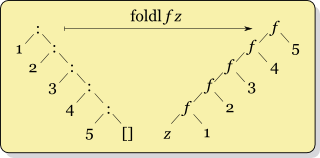

class: center, middle # Chapter 3: Functional Data Structures ## Christine Koppelt --- # Characteristics of functional data structures * immutable * excludes updates of entities * no need for locking => simplifies concurrency * can be shared => combine and reuse existing objects --- # Pattern Matching * Checking a sequence of elements for the presence of a given pattern --- # Algebraic data types (ADT) * Composite types: formed by combining other types * Examples * Lists * Tuples * Trees * ADTs are analyzed via pattern matching --- # Fold * Higher-order function that processes a data structure and produces a value * Example: folding the list [1,2,3,4,5] with the + operator * Right fold: 1 + (2 + (3 + (4 + 5))) <div class="left-column"> <img src="Right-fold-transformation.png" width=250px> </div> ```scala def foldRight[A,B](as: List[A], z: B)(f: (A, B) => B): B = as match { case Nil => z case Cons(x, xs) => f(x, foldRight(xs, z)(f)) } ``` <div style="clear:left"> * Left fold: (((1 + 2) + 3) + 4) + 5 <div class="left-column">  </div> ```scala def foldLeft[A,B](l: List[A], z: B)(f: (B, A) => B): B = l match { case Nil => z case Cons (x, xs) => foldLeft(xs, f(z, x))(f) } ``` <div style="clear:left"> * Unfold: takes a value, applies it to a function and generates a data structure from it --- # Defining functional data structures in Scala ```scala 1 sealed trait List[+A] 2 case object Nil extends List[Nothing] 3 case class Cons[+A](head: A, tail: List[A]) extends List[A] 4 5 object List { 6 def sum(ints: List[Int]): Int = ints match { 7 case Nil => 0 8 case Cons(x,xs) => x + sum(xs) 9 } 10 } ``` 1) Declare List data type; parametrized with type A; Data types start with keyword "trait" 2) Data constructor for empty list; Nothing is a subtype of every other type 3) Data constructor for nonempty lists; tail may be Nil or another Cons 5) List companion object. Contains functions for creating and working with lists --- # Sources * Fold in the Haskell wiki: http://www.haskell.org/haskellwiki/Fold